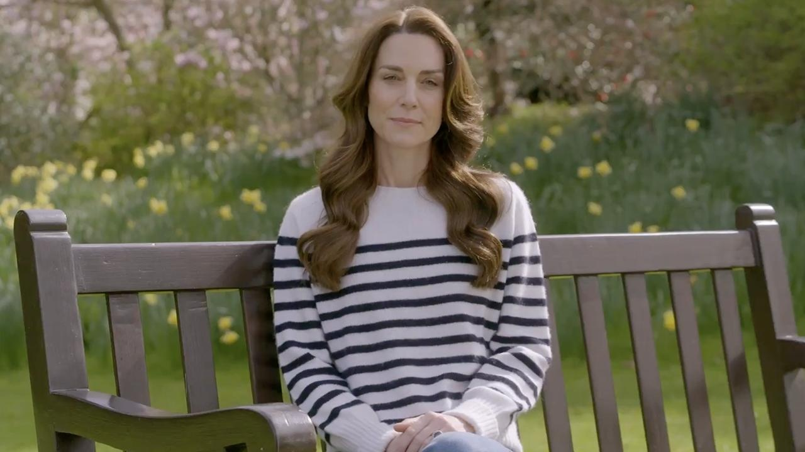

Kate Middleton 'wrote every word' of emotional cancer announcement, friend saysIn the days following Kate Middleton's shock cancer announcement, a purported close friend of the princess is sharing insight into why she chose to be so transparent and how she approached recording a video for the public. "It allowed her to speak directly to the public who, overwhelmingly, have always been with her and her family and who don’t buy into the noise and gossip," an unnamed friend of the Princess of Wales told The Sunday Times. "It was all her, she wrote every word of it, it came together very quickly," they added of Catherine's emotional message. "It wasn’t really about the drama of the last few weeks, though obviously that has been upsetting," the confidante explained, referencing the mounting speculation that surrounded Catherine's health in recent weeks. "She felt she had to do it because of who she is. It was more that she knows she is a public figure and has a wider leadership responsibility. She knew she had to share the news because of how it was going to affect her work and her short-term future role, and [it was about] what was the most compassionate way she could deliver the news, so that it would land with the public in the least shocking way," the friend added. "A written statement, she felt, would be too jarring. It was about people seeing her, and her reassuring people that she was positive about it. Knowing it was news that was going to shock people, she wanted to do it as compassionately as possible. When things are really tough, that gratitude to the public for their support is their mantra," the friend noted of the royal family. A primary concern of Catherine's was how her young children would handle the news, which she touched upon in her announcement. "It has taken us time to explain everything to George, Charlotte and Louis in a way that's appropriate for them, and to reassure them that I am going to be OK," she emphasized in the video. "As I have said to them, I am well and getting stronger every day by focusing on the things that will help me heal; in my mind, body and spirits." Since announcing her diagnosis, Catherine and Prince William have received an abundance of well-wishes, for which they're grateful. "The Prince and Princess are both enormously touched by the kind messages from people here in the U.K., across the Commonwealth and around the world in response to Her Royal Highness’ message," a spokesperson for the couple told Reuters over the weekend. "They are extremely moved by the public’s warmth and support and are grateful for the understanding of their request for privacy at this time." On Friday, Catherine revealed that after her abdominal surgery, doctors initially believed her "condition was non-cancerous," but further testing proved otherwise. "My medical team therefore advised that I should undergo a course of preventative chemotherapy and I am now in the early stages of that treatment," she shared. The situation is eerily similar to that of King Charles III, who shared with the world that cancer had been detected in his body while undergoing treatment for an enlarged prostate. Both royals received treatment at The London Clinic, and overlapped in their stays at the hospital. "When they were in hospital together there was a lot of toddling down the corridor to spend time with her," a royal source told The Sunday Times. "He has been encouraging and supporting her throughout." |
 |